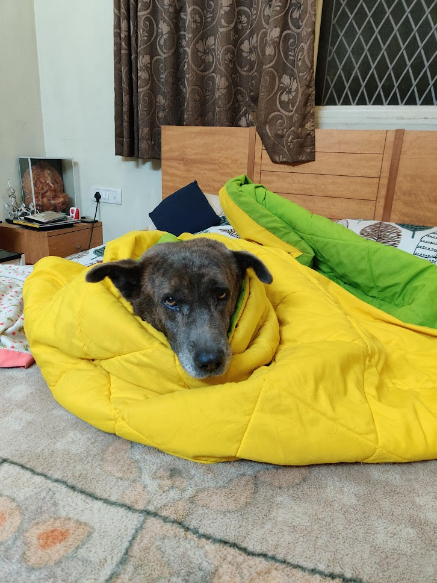
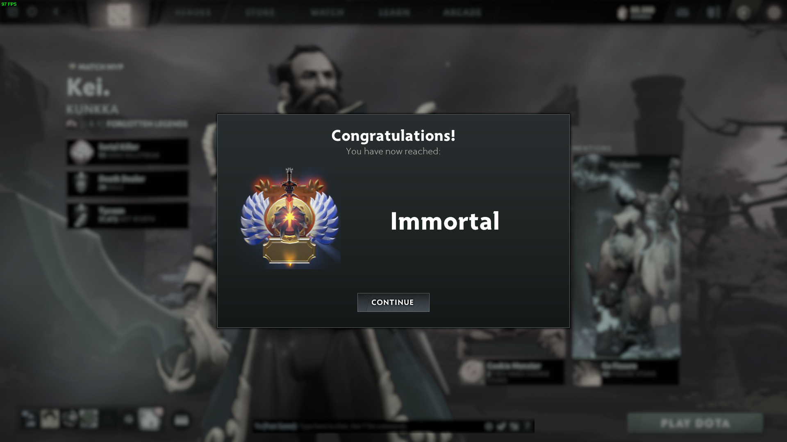
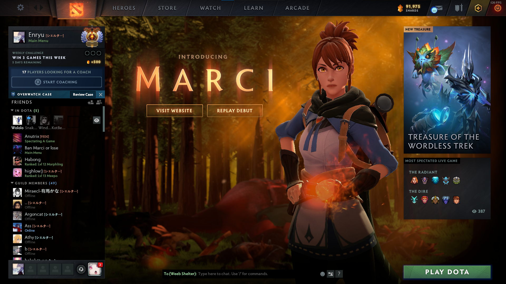
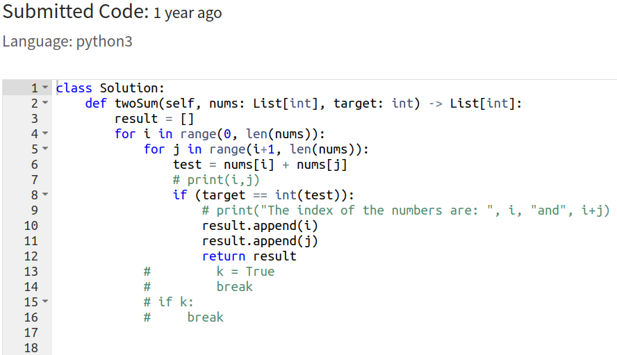
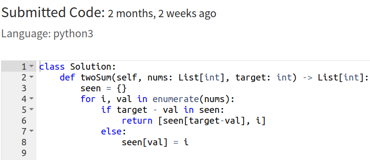
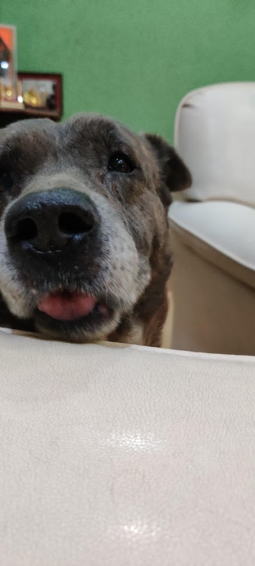

This is long due... I have been delaying this for so long. I am Shreyas Kanjalkar, and the dog in my pfp is my cute dog. His name is Spiky, a part of my soul. I come from a small city, Aurangabad in India. I spent my entire childhood here. From kindergarten to high school, all of it was here.
I did my undergrad in Manipal Institute of Technology. The 4 years that I spent here were probably the best years of my life so far. If I were to be given a chance to relive something, I would choose these 4 years without a doubt. All the friends, relationships, mistakes, studies, parties, everything about this place was amazing. I do not regret a single thing about going here.
I graduated from Manipal in 2020. I was supposed to come to the states for my Masters in 2020 itself, but due to COVID I decided to defer my admission. Now I had one year in my hand. In this one year, I focused on my physical fitness, looked after my dog(he had very bad health conditions during these times) and spent times with my family. I also achieved something that was one of my life goals.
If you've have ever heard of Dota2, then you will know what I am talking about. Dota2 is a MobA, and I love this game to the core. It is a love hate relationship. When COVID started, I think I was around legend 4 in medal. I never really played ranked, most of the times we played 5 man unranked party queue, goofing around but also trying to win. I think I started grinding ranked around January of 2021, and I reached immortal rank in July, just 15 days before coming to the states. It might not matter to most of the people, but it is one of my proudest achievements in my life.
You can add me on steam using my this link https://steamcommunity.com/id/EchizeNNN , although I am not really active since I've come to the states. I want to regrind to immortal once I graduate, hopefully without going bald.
Now comes August of 2022, I come to the states. My brother already works in the states, so it was not a complete stranger land to me. When I came to WPI, I had little to no experience in programming. And my first assignment when I started my MS in Robotics was in programming. Everything was overwhelming for me, someone who has never used ubuntu ever, someone who has written code which is extremly garbage and enefficient. But as I started down the journey of programming and robotics, I started to enjoy it more and more. Recently, I was grinding LeetCode questions to practice for job interviews. I came accross a classic question of Two Sums on LeetCode. Take a look at these two images, it gave me a good laugh when I looked at it, and made me slighlty happy. It showed progress in my programming understanding. This is just an example, but all my courses that I've taken at WPI are CS related. They all invovled programming some way or another.
Well that's where I am right now.. currently trying to balance out studies and the struggles of job hunting along with changing my profile to Software Engineer worthy. I hope to keep on updating this blog soon. If you made it this far, cheers and hopefully we can stay connected.
See ya! :)